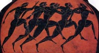

h( gunh\ fhsi\ to\n filo/sofon paideu/ein to\n pai~da.
The woman says (literally) the philosopher to teach the child or, in better English, The woman says that the philosopher teaches the child.
The first is clearly an example of a DIRECT quotation where the writer is repeating exactly what the woman says. The second is an example of INDIRECT speech (or "indirect discourse" or "indirect statement") where the writer is reporting about something that the woman says. You can see that the verb in this indirect speech becomes an infinitive whose subject (if it is not the same subject as that of the main verb) is in the accusative case.
In this example (the introductory verb is a form of le/gw instead of fhmi/), you see o(/ti introducing a subordinate clause with the verb in the indirect speech retaining its original tense and with its subject in the nominative. You may see w(j instead of o#ti.

1. o( basileu\j fhsi\ "h( po/lij e)sti kalli/sth."2. oi( pai~dej le/gousin "oi( fi/loi pe/mpousi ta\ dw~ra."
3. h(mei~j le/gomen "oi( a)/ndrej ei)sin e)n oi)ki/a|."
4. fhsi\ h( gunh\ "oi( qeoi\ oi( e)n ou)ranw~| pe/mpontai dw~ra toi~j a)nqrw/poij."
5. o( pai~j fhsi/ "to\ tw~n qew~n dw~ron e)stin a)gaqo/n."6. le/gei o( di/kaioj basileu/j "pe/mpw ta\ dw~ra kai\ filw~ ta\ paidi/a." (Watch for the change of person in the indirect speech clause.)
Answer Key
SEQUENCES OF MOODS AND TENSES IN INDIRECT SPEECH Read carefully the various examples of indirect speech that you find at Thrasymachus pages 269-270, numbers 66-72. If you note the tense of the verbs in the main clause and the indirect speech, you will find that these sentences are not difficult to understand and translate.
In addition to verbs that mean "to say," verbs that indicate thinking, perceiving, knowing, hoping, etc., can also introduce indirect speech. Verbs that indicate knowing or showing usually have a participle in indirect speech as does the verb a)gge/llw.
Reread Chapter XXI and notice all the examples of indirect speech. Which have infinitives? Participles? Clauses that start with w(j or o#ti?
SOME COMMON VERBS THAT INTRODUCE INDIRECT SPEECH
a)gge/llw le/gw ai)sqa/nomai manqa/nw a)kou/w nomi/zw a)pokri/nomai pisteu/w gignw/skw fai/nw e)chge/omai fhmi/
INFORMATION ON A CHARACTER IN CHAPTERS XXI
o( Odusseu/j o( Odusseu/j in Perseus o( Odusseu/j on Mythweb o( Odusseu/j on Pantheon Forward to Chapter XXII  Back to Contents